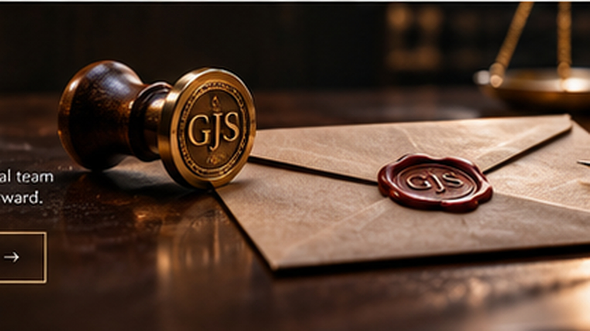

01 / FIRST MEETING
01 / FIRST MEETINGA welcome
without the formality.
We begin by listening carefully and understanding what brought you here.
GJS · ADVOCATES & SOLICITORS
Clear advice and considered strategy for the moments that matter most.
↓The law is a framework. What you build inside it is entirely your own.
GJS brings clear judgment to complex legal questions, pairing careful preparation with personal attention and practical advice.
Meet the practice ↗Rigorous legal work, shaped around the people, obligations, and outcomes at stake.
Thoughtful representation through rights, remedies, and civil disputes.
↗ G / 02Careful advice for organisations, transactions, and commercial relationships.
↗ G / 03
Clear strategy, disciplined preparation, and focused advocacy when stakes rise.
↗Good representation is built on listening, close preparation, and clear conversations from the first meeting onward.
01 / FIRST MEETINGWe begin by listening carefully and understanding what brought you here.
 02 / PREPARATION
02 / PREPARATIONFocused review and clear communication at every step of the work.
 03 / PARTNERSHIP
03 / PARTNERSHIPGrounded advice and steady counsel when decisions matter most.
“Good counsel brings
clarity to complexity
and purpose to every step.”
GJS · ADVOCATES & SOLICITORS